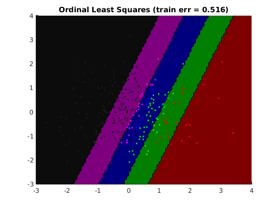
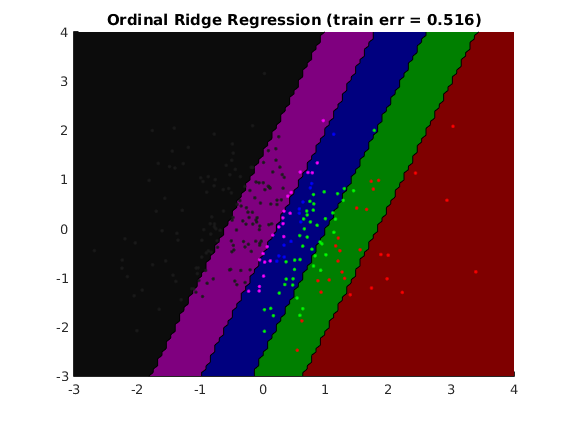
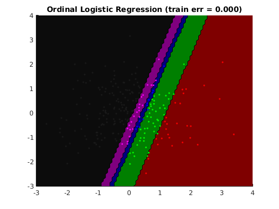

Contents
Description of demo_ordinal_linear.m
Demonstrates unregularized and L2-regularized ordinal regression for classification, and ordinal logistic regression on a dataset with a relatively simple ordering defined along 1D
clear all close all % Generates nClasses, Xtrain, ytrain, Xtest, ytest generateData_ordinal_1D
usage of ordinal least-squares regression
options_ls.nClasses = nClasses; model_ls = ml_ordinal_regression(Xtrain, ytrain, options_ls); yhatTest_ls = model_ls.predict(model_ls, Xtest); yhatTrain_ls = model_ls.predict(model_ls, Xtrain); testError_ls = sum(ytest~=yhatTest_ls)/length(ytest); model_ls.trainError = sum(ytrain~=yhatTrain_ls)/length(ytrain); fprintf('Averaged misclassification test error with %s is: %.3f\n', ... model_ls.name, testError_ls); linear_makeOneContourPlot(Xtrain,ytrain, model_ls)
Averaged misclassification test error with Ordinal Least Squares is: 0.540
usage of ordinal ridge regression with CV on regularizer
options_cv = []; options_cv.nFolds = 5; options_cv.subModel = @ml_ordinal_regression; options_cv.subOptions = []; options_cv.subOptions.regressionFunc = @ml_regression_leastSquares; options_cv.subOptions.nClasses = nClasses; options_cv.paramNames = 'subOptions.lambdaL2'; options_cv.paramValues = 1e-4:1e-1:1e2; options_cv.loss = 'mc'; model_cv = ml_general_CV(Xtrain, ytrain, options_cv); yhatTest_ls = model_cv.predict(model_cv, Xtest); yhatTrain_ls = model_cv.predict(model_cv, Xtrain); testError_ls = sum(ytest~=yhatTest_ls)/length(ytest); model_cv.subModel.trainError = sum(ytrain~=yhatTrain_ls)/length(ytrain); fprintf('Averaged misclassification test error with %s is: %.3f\n', ... model_cv.name, testError_ls); linear_makeOneContourPlot(Xtrain,ytrain, model_cv.subModel)
Averaged misclassification test error with CV on: subOptions.lambdaL2 is: 0.548
usage of ordinal logistic regression
options_olr = []; options_olr.nClasses = nClasses; options_olr.verbose = 0; model_olr = ml_ordinal_logistic(Xtrain, ytrain, options_olr); yhatTest_olr = model_olr.predict(model_olr, Xtest); yhatTrain_olr = model_olr.predict(model_olr, Xtrain); testError_olr = sum(ytest~=yhatTest_olr)/length(ytest); model_olr.trainError = sum(ytrain~=yhatTrain_olr)/length(ytrain); fprintf('Averaged misclassification test error with %s is: %.3f\n', ... model_olr.name, testError_olr); linear_makeOneContourPlot(Xtrain,ytrain, model_olr)
Averaged misclassification test error with Ordinal Logistic Regression is: 0.020